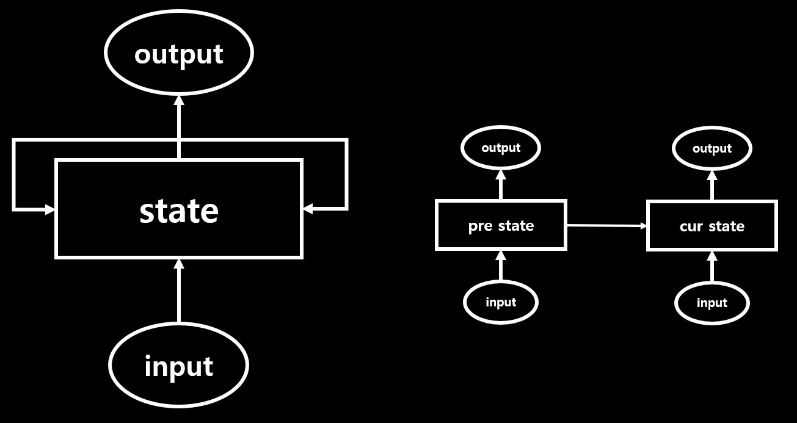
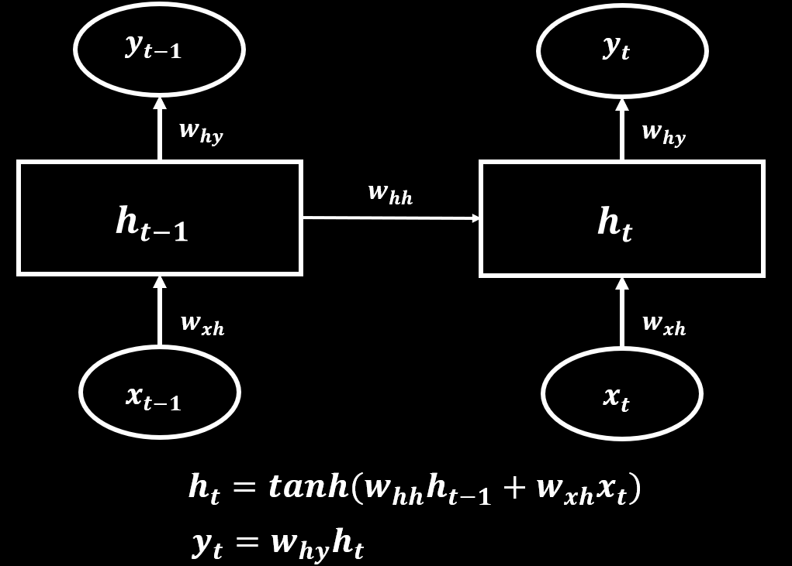
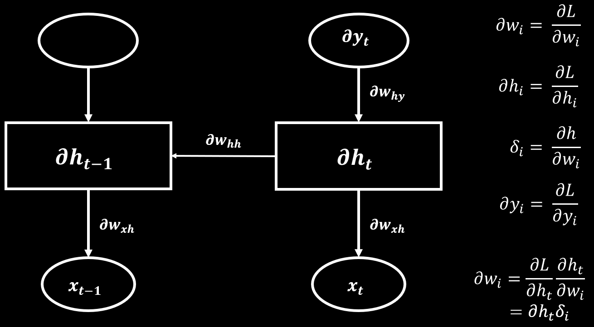

RNN Layer란?
RNN이란 Recurrent Neural Networks의 약자입니다. RNN은 자연어처리, 음성처리 등 Sequential 데이터를 처리하기 위해 많이 사용되는 모델입니다.

위에 그림과 같이 현재 상태에 이전 상태 영향을 가지기 때문에 Recurrent라는 단어로 표현됩니다.

여기서 흥미로운 부분은 weights가 공유 한다는 것입니다.

RNN 역전파는 위와 같습니다. weights가 공유되기 때문에 학습을 계속 진행하면서 처음에 학습된 데이터는 점점 잊혀질 것(Gradient Vanishing) 입니다. 이로 인한 문제를 해결하기 위해 추후에 LSTM이 나옵니다.
rnn_layer.c
increment_layer
static void increment_layer(layer *l, int steps)
{
int num = l->outputs*l->batch*steps;
l->output += num;
l->delta += num;
l->x += num;
l->x_norm += num;
}
forward_rnn_layer
void forward_rnn_layer(layer l, network net)
{
network s = net;
s.train = net.train;
int i;
layer input_layer = *(l.input_layer);
layer self_layer = *(l.self_layer);
layer output_layer = *(l.output_layer);
fill_cpu(l.outputs * l.batch * l.steps, 0, output_layer.delta, 1);
fill_cpu(l.outputs * l.batch * l.steps, 0, self_layer.delta, 1);
fill_cpu(l.outputs * l.batch * l.steps, 0, input_layer.delta, 1);
if(net.train) fill_cpu(l.outputs * l.batch, 0, l.state, 1);
for (i = 0; i < l.steps; ++i) {
s.input = net.input;
forward_connected_layer(input_layer, s);
s.input = l.state;
forward_connected_layer(self_layer, s);
float *old_state = l.state;
if(net.train) l.state += l.outputs*l.batch;
if(l.shortcut){
copy_cpu(l.outputs * l.batch, old_state, 1, l.state, 1);
}else{
fill_cpu(l.outputs * l.batch, 0, l.state, 1);
}
axpy_cpu(l.outputs * l.batch, 1, input_layer.output, 1, l.state, 1);
axpy_cpu(l.outputs * l.batch, 1, self_layer.output, 1, l.state, 1);
s.input = l.state;
forward_connected_layer(output_layer, s);
net.input += l.inputs*l.batch;
increment_layer(&input_layer, 1);
increment_layer(&self_layer, 1);
increment_layer(&output_layer, 1);
}
}
forward
backward_rnn_layer
void backward_rnn_layer(layer l, network net)
{
network s = net;
s.train = net.train;
int i;
layer input_layer = *(l.input_layer);
layer self_layer = *(l.self_layer);
layer output_layer = *(l.output_layer);
increment_layer(&input_layer, l.steps-1);
increment_layer(&self_layer, l.steps-1);
increment_layer(&output_layer, l.steps-1);
l.state += l.outputs*l.batch*l.steps;
for (i = l.steps-1; i >= 0; --i) {
copy_cpu(l.outputs * l.batch, input_layer.output, 1, l.state, 1);
axpy_cpu(l.outputs * l.batch, 1, self_layer.output, 1, l.state, 1);
s.input = l.state;
s.delta = self_layer.delta;
backward_connected_layer(output_layer, s);
l.state -= l.outputs*l.batch;
/*
if(i > 0){
copy_cpu(l.outputs * l.batch, input_layer.output - l.outputs*l.batch, 1, l.state, 1);
axpy_cpu(l.outputs * l.batch, 1, self_layer.output - l.outputs*l.batch, 1, l.state, 1);
}else{
fill_cpu(l.outputs * l.batch, 0, l.state, 1);
}
*/
s.input = l.state;
s.delta = self_layer.delta - l.outputs*l.batch;
if (i == 0) s.delta = 0;
backward_connected_layer(self_layer, s);
copy_cpu(l.outputs*l.batch, self_layer.delta, 1, input_layer.delta, 1);
if (i > 0 && l.shortcut) axpy_cpu(l.outputs*l.batch, 1, self_layer.delta, 1, self_layer.delta - l.outputs*l.batch, 1);
s.input = net.input + i*l.inputs*l.batch;
if(net.delta) s.delta = net.delta + i*l.inputs*l.batch;
else s.delta = 0;
backward_connected_layer(input_layer, s);
increment_layer(&input_layer, -1);
increment_layer(&self_layer, -1);
increment_layer(&output_layer, -1);
}
}
backward